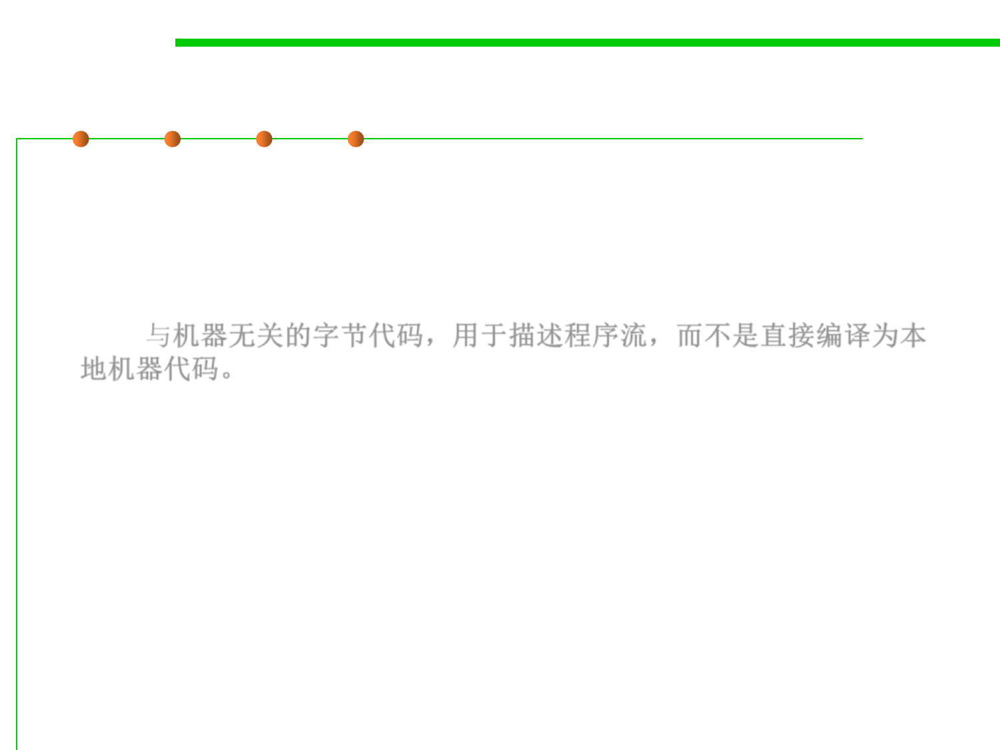

Object files in Java
2.2 Process, Systems, and Tools of Software Construction
▪ The object file format for a Java class is known as a class file and has
the suffix of .class.
▪ Machine-independent byte codes to describe the flow of the
program(程序流) instead of compiling directly into native machine
code.与机器无关的字节代码，用于描述程序流，而不是直接编译为本
地机器代码。
▪ A Java Virtual Machine (JVM) is required to load and interpret these
byte codes, although the JVM likely first translates them into native
machine code before actually executing the program.
▪ Use javac command to translate Java source files into class files.